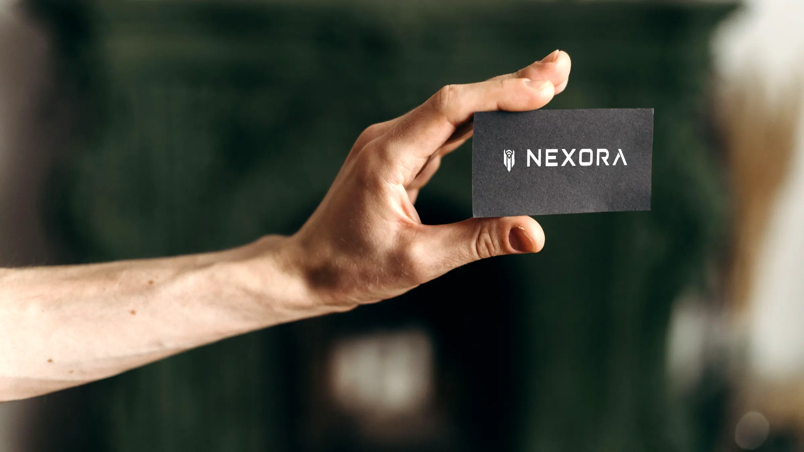
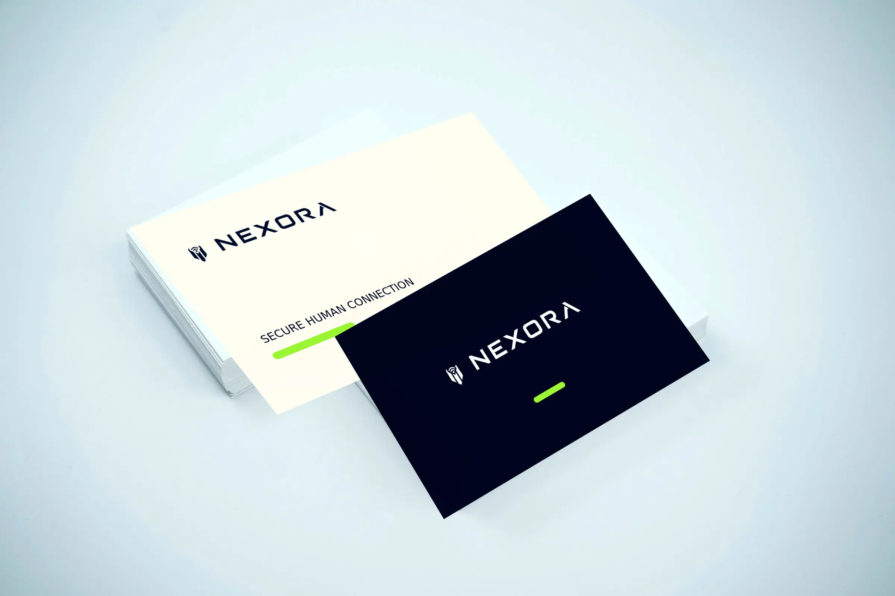
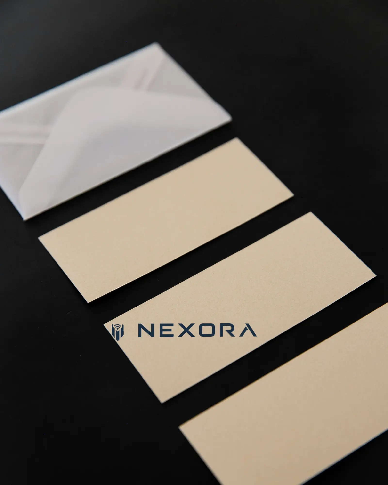
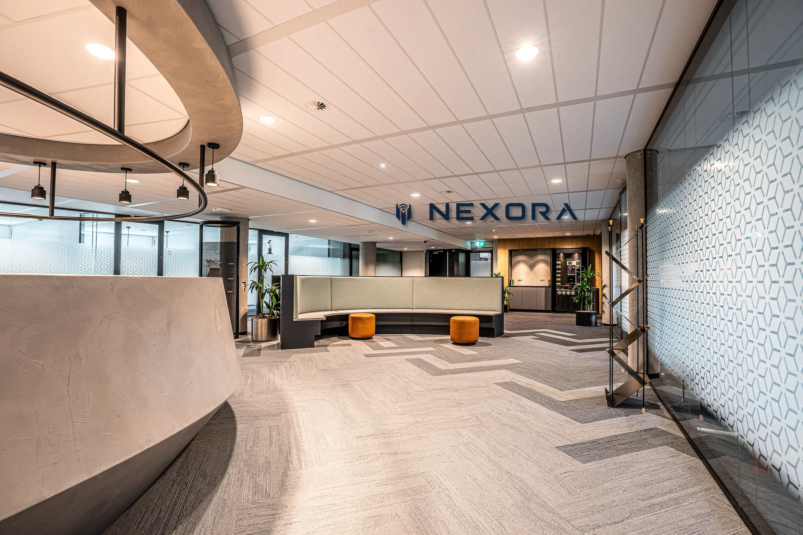
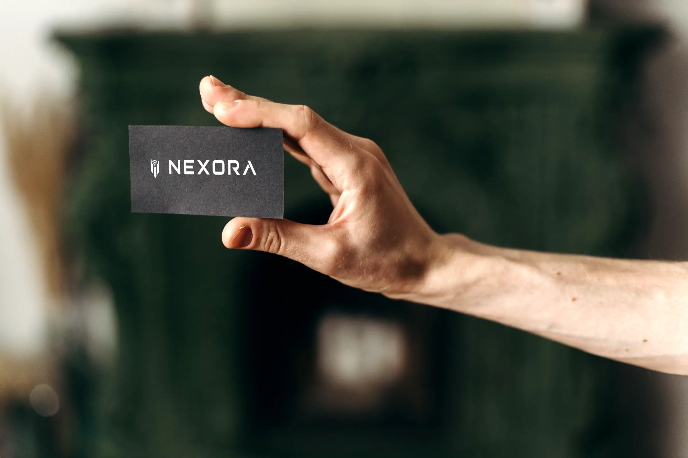

Security brands must feel credible before a person understands the underlying technology.

Selected work
Security,
Brand identity · Self-directed concept
Security,
with a human centre.
NEXORA is a conceptual cybersecurity brand designed to make advanced protection feel precise, calm, and fundamentally human.
Read the case study- My role
- Strategy, naming, identity, art direction & applications
- Context
- Self-directed academic brand concept
- Positioning
- Cybersecurity that protects connection, not only infrastructure
- Status
- Conceptual identity; not a launched or commissioned company
01 / The brief
Make protection feel trustworthy—not threatening.
The self-directed brief imagined a security company serving organisations where people and sensitive information continuously connect. The identity needed technical authority without relying on fear, aggressive shields, or familiar “hacker” imagery.
A calm visual language frames cybersecurity as reliable infrastructure rather than constant crisis.
The identity has to hold across credentials, stationery, and environmental signage without depending on decorative effects.
02 / The central idea
Protect the connection. Keep the person visible.
“Secure Human Connection” became the organising principle. It shifts the story away from invisible threats and towards what security makes possible: people communicating, working, and moving through connected systems with confidence.
SECUREHUMANCONNECTION
Protection is the structure. Human connection is the purpose.
Calm authority
Dark, stable surfaces establish trust without turning the brand into a warning system.
Visible confirmation
Signal green appears only when the system confirms a protected state.
Human scale
Warm paper, tactile finishes, and generous spacing balance the technical character.
03 / The mark
Three ideas meet in one compact symbol.
The mark combines a protected enclosure, an upward signal, and a central human figure. Its bilateral construction gives it the precision expected of infrastructure while the open centre keeps the identity from feeling closed or defensive.
Outer planes create a stable, shield-like boundary.
Concentric arcs make secure connection immediately legible.
The central form gives the system a human point of reference.
04 / The visual system
Dark infrastructure. Warm contact. One precise signal.
The palette separates long-term identity from momentary status. Navy and silver carry recognition; warm white supports approachable communication; green is reserved for confirmed protection and active access.
TYPOGRAPHIC VOICENEXORASECURE HUMAN CONNECTION
Wide geometric capitals express engineered clarity. Smaller tracked text creates a measured information layer for labels and wayfinding.
STATUS BEHAVIOUR
PROTECTED
The light is small by design: confirmation should be immediate, not visually alarming.
05 / The brand world
One identity across the moments people actually touch.
The system moves from a card held in the hand to printed contact material and a shared workplace. Scale, contrast, and material change; the core mark does not.




06 / The result
A security identity built around what deserves protection.
The completed concept establishes NEXORA’s positioning, mark, wordmark, palette, typography, status behaviour, and a coherent family of printed, personal, and environmental applications. It demonstrates a brand system rather than a single logo, while clearly remaining an unlaunched, self-directed project.
- 01
- strategic idea
- 04
- functional colours
- 03
- real-world scales